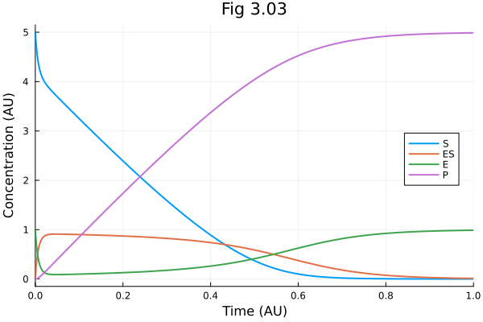
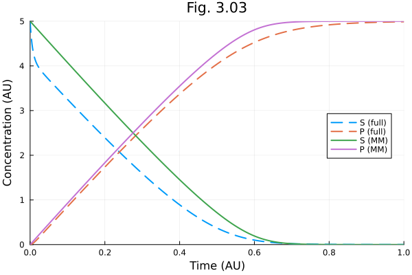

Fig 3.03#
Michaelis-Menten kinetics
using OrdinaryDiffEq
using ModelingToolkit
using Catalyst
using Plots
Plots.default(linewidth=2)
Reaction network
rn = @reaction_network begin
(k1, km1), S + E <--> ES
k2, ES --> E + P
end
\[\begin{split} \begin{align*}
\mathrm{S} + \mathrm{E} &\xrightleftharpoons[\mathtt{km1}]{\mathtt{k1}} \mathrm{\mathtt{ES}} \\
\mathrm{\mathtt{ES}} &\xrightarrow{\mathtt{k2}} \mathrm{E} + \mathrm{P}
\end{align*}
\end{split}\]
setdefaults!(rn, [
:S=>5.,
:ES=>0.,
:E=>1.,
:P=>0.,
:k1 => 30.,
:km1 => 1.,
:k2 => 10.,
])
osys = convert(ODESystem, rn; remove_conserved = true) |> structural_simplify
┌ Warning: You are creating a system or problem while eliminating conserved quantities. Please note,
│ due to limitations / design choices in ModelingToolkit if you use the created system to
│ create a problem (e.g. an `ODEProblem`), or are directly creating a problem, you *should not*
│ modify that problem's initial conditions for species (e.g. using `remake`). Changing initial
│ conditions must be done by creating a new Problem from your reaction system or the
│ ModelingToolkit system you converted it into with the new initial condition map.
│ Modification of parameter values is still possible, *except* for the modification of any
│ conservation law constants (Γ), which is not possible. You might
│ get this warning when creating a problem directly.
│
│ You can remove this warning by setting `remove_conserved_warn = false`.
└ @ Catalyst ~/.julia/packages/Catalyst/48wH3/src/reactionsystem_conversions.jl:456
\[\begin{split} \begin{align}
\frac{\mathrm{d} S\left( t \right)}{\mathrm{d}t} &= \mathtt{km1} \left( - E\left( t \right) + \Gamma_{1} \right) - \mathtt{k1} E\left( t \right) S\left( t \right) \\
\frac{\mathrm{d} E\left( t \right)}{\mathrm{d}t} &= \mathtt{k2} \left( - E\left( t \right) + \Gamma_{1} \right) + \mathtt{km1} \left( - E\left( t \right) + \Gamma_{1} \right) - \mathtt{k1} E\left( t \right) S\left( t \right)
\end{align}
\end{split}\]
observed(osys)
\[\begin{split} \begin{align}
\mathtt{ES}\left( t \right) &= - E\left( t \right) + \Gamma_{1} \\
P\left( t \right) &= E\left( t \right) - S\left( t \right) + \Gamma_{2}
\end{align}
\end{split}\]
tend = 1.0
1.0
prob = ODEProblem(osys, [], tend)
sol = solve(prob)
┌ Warning: Initialization system is overdetermined. 2 equations for 0 unknowns. Initialization will default to using least squares. `SCCNonlinearProblem` can only be used for initialization of fully determined systems and hence will not be used here. To suppress this warning pass warn_initialize_determined = false. To make this warning into an error, pass fully_determined = true
└ @ ModelingToolkit ~/.julia/packages/ModelingToolkit/CvDvM/src/systems/diffeqs/abstractodesystem.jl:1446
retcode: Success
Interpolation: 3rd order Hermite
t: 37-element Vector{Float64}:
0.0
0.006600703726699514
0.01022277056012863
0.015543467478140675
0.02051947168533509
0.02641018786018821
0.03261917715421904
0.03974230175678756
0.04773168899544981
0.0570841908779507
⋮
0.6470324023587559
0.6931031408477125
0.7367683827322631
0.7791059865493958
0.8212466198548
0.8642333668324144
0.9090993660547448
0.9568878660418696
1.0
u: 37-element Vector{Vector{Float64}}:
[5.0, 1.0]
[4.395302952712936, 0.41804761979593485]
[4.236279331946385, 0.2827770333522629]
[4.091342551218703, 0.17911174466168772]
[4.002950476488606, 0.1328519100257541]
[3.9253138062440036, 0.10715692365888238]
[3.8580005265583304, 0.09568932433965067]
[3.788614104823388, 0.09092109954691635]
[3.7148221391871394, 0.08982060235163533]
[3.6304918096088126, 0.09058864991025088]
⋮
[0.048403385343370596, 0.7252277328768327]
[0.023100689055414694, 0.8069728851541076]
[0.011833488316888048, 0.8663842812196444]
[0.00655059704357094, 0.9083028367930729]
[0.003855908678970516, 0.937685266510625]
[0.002355825567417365, 0.9582641290934264]
[0.0014581179992702122, 0.9726435047202583]
[0.00089530369775176, 0.9825982936657858]
[0.0005834282632163896, 0.9884434120994313]
@unpack S, ES, E, P = osys
plot(sol, idxs=[S, ES, E, P], xlabel="Time (AU)", ylabel="Concentration (AU)", legend=:right, title="Fig 3.03")

rn303mm = @reaction_network begin
mm(S, k2 * ET, (km1 + k2) / k1), S ⇒ P ## using \Rightarrow
end
\[ \begin{align*}
\mathrm{S} &\xrightarrow{\frac{\mathtt{ET} S \mathtt{k2}}{S + \frac{\mathtt{k2} + \mathtt{km1}}{\mathtt{k1}}}} \mathrm{P}
\end{align*}
\]
setdefaults!(rn303mm, [
:S=>5.,
:ET=>1.,
:P=>0.,
:k1 => 30.,
:km1 => 1.,
:k2 => 10.,
])
osysmm = convert(ODESystem, rn303mm; remove_conserved = true) |> structural_simplify
┌ Warning: You are creating a system or problem while eliminating conserved quantities. Please note,
│ due to limitations / design choices in ModelingToolkit if you use the created system to
│ create a problem (e.g. an `ODEProblem`), or are directly creating a problem, you *should not*
│ modify that problem's initial conditions for species (e.g. using `remake`). Changing initial
│ conditions must be done by creating a new Problem from your reaction system or the
│ ModelingToolkit system you converted it into with the new initial condition map.
│ Modification of parameter values is still possible, *except* for the modification of any
│ conservation law constants (Γ), which is not possible. You might
│ get this warning when creating a problem directly.
│
│ You can remove this warning by setting `remove_conserved_warn = false`.
└ @ Catalyst ~/.julia/packages/Catalyst/48wH3/src/reactionsystem_conversions.jl:456
\[ \begin{align}
\frac{\mathrm{d} S\left( t \right)}{\mathrm{d}t} &= - mm\left( S\left( t \right), \mathtt{ET} \mathtt{k2}, \frac{\mathtt{k2} + \mathtt{km1}}{\mathtt{k1}} \right)
\end{align}
\]
tend = 1.0
probmm = ODEProblem(osysmm, [], tend)
solmm = solve(probmm)
┌ Warning: Initialization system is overdetermined. 1 equations for 0 unknowns. Initialization will default to using least squares. `SCCNonlinearProblem` can only be used for initialization of fully determined systems and hence will not be used here. To suppress this warning pass warn_initialize_determined = false. To make this warning into an error, pass fully_determined = true
└ @ ModelingToolkit ~/.julia/packages/ModelingToolkit/CvDvM/src/systems/diffeqs/abstractodesystem.jl:1446
retcode: Success
Interpolation: 3rd order Hermite
t: 15-element Vector{Float64}:
0.0
0.08829951015219592
0.2967725537625472
0.5000004875811703
0.6196473972837556
0.6670104453577671
0.7099275100893456
0.7465737578395125
0.7827003202641042
0.8170029171212273
0.8515324938674043
0.8866728375768105
0.9240249128338719
0.9646817216791721
1.0
u: 15-element Vector{Vector{Float64}}:
[5.0]
[4.182468228248958]
[2.3146741114200724]
[0.7140966653045732]
[0.13296502509374303]
[0.0463025074968492]
[0.01563176034250269]
[0.005910624536905648]
[0.002229911708642734]
[0.0008784935038915187]
[0.0003432013977878646]
[0.00013175527102757403]
[4.7615955140348484e-5]
[1.5733007241347164e-5]
[6.007498446700923e-6]
@unpack S, P = osys
fig = plot(sol, idxs=[S, P], line=(:dash), label=["S (full)" "P (full)"])
plot!(fig, solmm, idxs=[S, P], label=["S (MM)" "P (MM)"])
plot!(fig, title="Fig. 3.03",
xlabel="Time (AU)", ylabel="Concentration (AU)",
xlims=(0., tend), ylims=(0., 5.), legend=:right
)

This notebook was generated using Literate.jl.